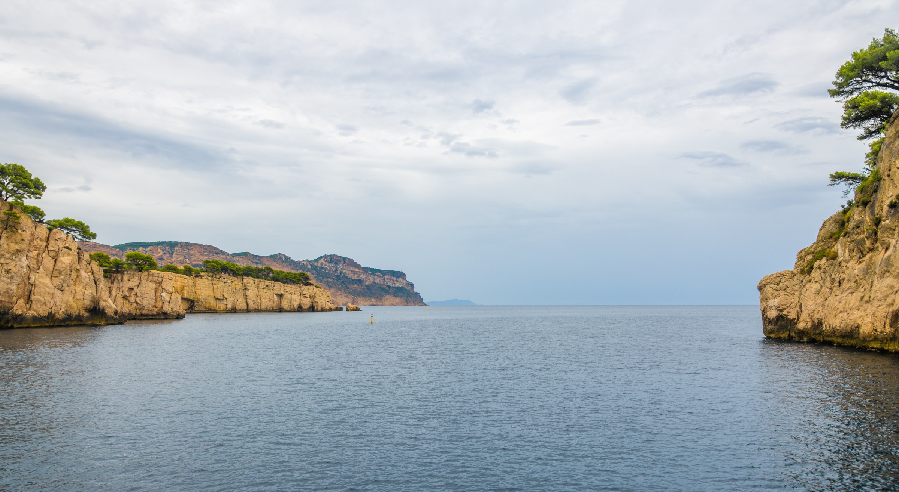

Le programme des quatre jours
48e anniversaire de la promotion X77 à Marseille, du jeudi 11 au dimanche 14 septembre 2025

Jour 1 Jeudi 11 septembre
Accès à Notre-Dame de la Garde par le bus 60 depuis l'arrêt « Vieux Port Ballard » (environ 15 minutes).
Visite de la basilique avec des guides, panorama sur toute la ville et présentation de Marseille et de ses quartiers.
Chemin des bunkers et des chars, avec les récits historiques des guides, jusqu'au bord de mer.
Jour 2 Vendredi 12 septembre
Réplique de la grotte et de ses peintures préhistoriques, film sur sa découverte, visite du musée et de la section consacrée à la montée des eaux.
Présentation de la compagnie de croisière sous pavillon français, de son projet de navire « neutre en carbone », visite et rencontre avec un commandant.
La course au large en équipage amateur, et le retour à l'emploi des personnes atteintes d'un handicap cognitif.
2 600 ans d'histoire avec six guides : le Panier, l'Antiquité, la peste de 1720, la Vieille Charité, le quartier Saint-Jean, la French Connection, la transformation du port…
Ancien commandant de la gendarmerie de la région PACA, maire du 7e secteur : la lutte contre la criminalité à Marseille et son expérience d'élu local.
Jour 3 Samedi 13 septembre
Météo oblige, le bateau, plus grand que prévu, n'a pas pu faire escale à Cassis.
Résultats de l'enquête de promotion et remise de l'ouvrage de l'anniversaire.
Jour 4 Dimanche 14 septembre
Proposée par notre camarade Luc Ravel, pour ceux qui le souhaitent. L'abbaye, fondée au Ve siècle par Jean Cassien, a rayonné sur toute la Provence autour de l'an mil.
Résidence du gouverneur militaire de Marseille : demeure néoclassique achevée en 1832, au cœur d'un parc arboré, avec une grande terrasse.
Photos : Patrick Tejedor, Tristan de Viaris et partages des participants.
Programme repris du site de l'anniversaire, sites.google.com/view/x77-marseille, réalisé par l'équipe d'organisation.